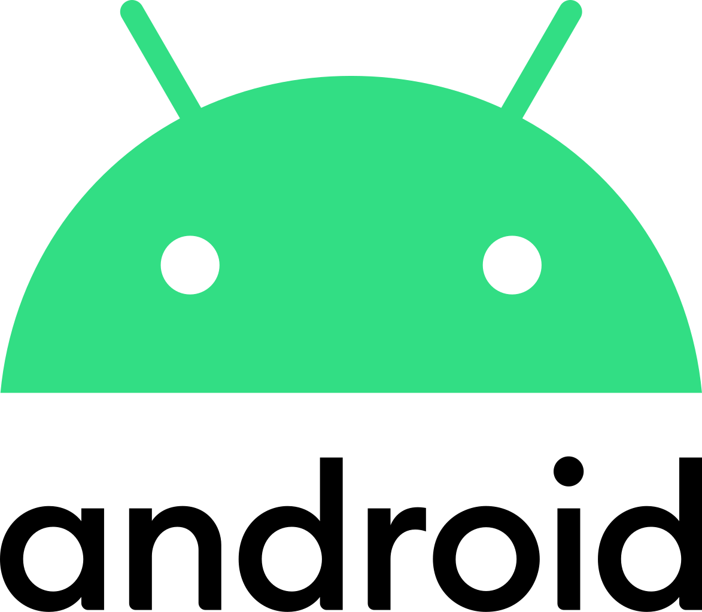

What is "Android"?

Android is a mobile operating system based on a modified version of the Linux kernel and other open source software, designed primarily for touchscreen mobile devices such as smartphones and tablets. Android is developed by a consortium of developers known as the Open Handset Alliance and commercially sponsored by Google. It was unveiled in November 2007, with the first commercial Android device launched in September 2008.
It is free and open source software; its source code is known as Android Open Source Project (AOSP), which is primarily licensed under the Apache License. However most Android devices ship with additional proprietary software pre-installed, most notably Google Mobile Services (GMS) which includes core apps such as Google Chrome, the digital distribution platform Google Play and associated Google Play Services development platform. About 70 percent of Android smartphones run Google's ecosystem; competing Android ecosystems and forks include Fire OS (developed by Amazon) or LineageOS. However the "Android" name and logo are trademarks of Google which impose standards to restrict "uncertified" devices outside their ecosystem to use Android branding.
The source code has been used to develop variants of Android on a range of other electronics, such as game consoles, digital cameras, portable media players, PCs and others, each with a specialized user interface. Some well known derivatives include Android TV for televisions and Wear OS for wearables, both developed by Google. Software packages on Android, which use the APK format, are generally distributed through proprietary application stores like Google Play Store, Samsung Galaxy Store, and Huawei AppGallery, or open source platforms like Aptoide or F-Droid.
Android has been the best-selling OS worldwide on smartphones since 2011 and on tablets since 2013. As of May 2017, it has over two billion monthly active users, the largest installed base of any operating system, and as of January 2021, the Google Play Store features over 3 million apps. The current stable version is Android 11, released on September 8, 2020.
Full article on Wikipedia...
What famous people think about android:
Bill Gates
Bill Gates prefers the more open nature of the Android ecosystem, as he is more "flexible" about how the software interacts with the operating system.
"I actually use an Android phone ," Gates told Sorkin. "As I want to keep track of everything, I often play with iPhones, but the one I carry with me is Android," revealed the businessman and philanthropist.
“Some of the Android makers pre-install Microsoft software in a way that makes things easier for me. They are more flexible about how the software connects with the operating system. So I got used to that. You know, a lot of my friends have iPhones, so there's no purity , ” Gates explained.
Steve Jobs
Anyone who follows the smartphone and tablet market knows that Android has become the No. 1 mobile operating system in the world. They also know that, prior to his death in 2011, Steve Jobs was not very happy about Google's mobile operating system. In fact, he made a rather bold threat when he talked about his dislike of this competing mobile OS.
"I will spend my last dying breath if I need to, and I will spend every penny of Apple's $40 billion in the bank, to right this wrong. I'm going to destroy Android, because it's a stolen product. I'm willing to go thermonuclear war on this," the late CEO famously said.
When Apple was working on its iPhone strategy, which included what is now iOS, Google's CEO was Eric Schmidt and he was serving on Apple's board. That means that he was likely privy to Apple's iPhone strategy and roadmap at the same time Android was in its infancy. Two years prior to the iPhone launch, Google acquired Andy Rubin's Android Inc., which would eventually became the Android mobile OS.
About the team

Android Experience is the leading Ukrainian information resource about IT for users and enthusiasts, taking first place in the ranking of bigmir.net.
Our area of interest is computer and digital equipment for business and personal use, namely: smartphones, tablets, laptops, computer components and peripherals. As well as software, services, technology, movies, games, cars and transport.
The Android Experience team consists of professional IT journalists and editors. Daily foreign and Ukrainian news, reviews of devices and software, video reviews of new "iron", blogs of editors and experts appear on the site.